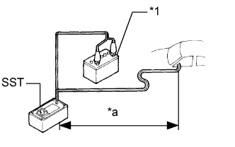
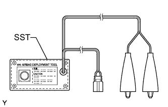
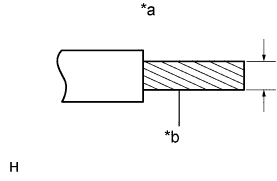
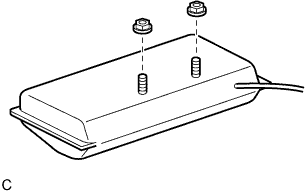

БОКОВАЯ ПОДУШКА БЕЗОПАСНОСТИ ПЕРЕДНИХ СИДЕНИЙ В СБОРЕ > СНЯТИЕ С ЭКСПЛУАТАЦИИ |
| 1. МЕРЫ ПРЕДОСТОРОЖНОСТИ |
| 2. УТИЛИЗАЦИЯ ПОДУШКИ БЕЗОПАСНОСТИ ПЕРЕДНИХ СИДЕНИЙ В СБОРЕ (ЕСЛИ ОНА УСТАНОВЛЕНА В АВТОМОБИЛЕ) |
Проверьте работоспособность SST (Нажмите здесь).
Изучите меры предосторожности (Нажмите здесь).
Отсоедините провод от отрицательного (-) вывода аккумуляторной батареи.
Для сиденья с ручным приводом:
Снимите переднее сиденье (Нажмите здесь).
Для сиденья с электроприводом:
Снимите переднее сиденье (Нажмите здесь).
Для сидений с функцией облегчения посадки "Walk In":
Снимите переднее сиденье (Нажмите здесь).
Установите SST.
Отсоедините разъем (желтый) от боковой подушки безопасности переднего сиденья.
Подсоедините разъем SST к разъему боковой подушки безопасности передних сидений в сборе.
Для сиденья с ручным приводом:
Установите переднее сиденье (Нажмите здесь).
Для сиденья с электроприводом:
Установите переднее сиденье (Нажмите здесь).
Для сидений с функцией облегчения посадки "Walk In":
Установите переднее сиденье (Нажмите здесь).
|  |
Отодвиньте SST на расстояние не менее 10 м (32,8 фута) от переднего бокового стекла автомобиля.
| *1 | Аккумуляторная батарея |
| *a | 10 м или более |
Жгут проводов SST должен обеспечивать достаточное расстояние до переднего бокового окна. Закройте все двери и окна автомобиля.
Подсоедините красный зажим SST к положительному (+) выводу аккумуляторной батареи, а черный – к отрицательному (-) выводу.
Разверните подушку безопасности.
Никто не должен находиться внутри автомобиля и на расстоянии до 10 м (32,8 фута) от него.
Нажмите на активационный выключатель SST и разверните подушку безопасности.
| 3. УТИЛИЗАЦИЯ ПОДУШКИ БЕЗОПАСНОСТИ ПЕРЕДНИХ СИДЕНИЙ В СБОРЕ (ЕСЛИ ОНА НЕ УСТАНОВЛЕНА В АВТОМОБИЛЕ) |
|  |
Проверьте работоспособность SST (Нажмите здесь).
Снимите подушку безопасности передних сидений.
Снимите переднее сиденье (Нажмите здесь).
Отверните 2 гайки и снимите подушку безопасности передних сидений со спинки сиденья.
|  |
С помощью запасного жгута проводов для автомобиля привяжите к шине боковую подушку безопасности переднего сиденья.
| *a | Диаметр жгута проводов |
| *b | Поперечное сечение жгута проводов без изоляции |
|  |
Наживите 2 гайки на подушку безопасности передних сидений.
Обмотайте жгут проводов вокруг резьбовых шпилек подушки безопасности передних сидений, как показано на рисунке.
Разместите боковую подушку безопасности переднего сиденья так, чтобы при развертывании усилие направлялось внутрь шины.
| *a | Ширина |
| *b | Внутренний диаметр |
Привяжите боковую подушку безопасности переднего сиденья к шине с помощью нескольких жгутов проводов.
Подсоедините разъем SST к разъему боковой подушки безопасности передних сидений в сборе.
Установите шины.
| *1 | Шины (2 или более) |
Под шину, к которой привязана подушка безопасности передних сидений, подложите, как минимум, две шины.
На шину, к которой привязана подушка безопасности передних сидений, положите, как минимум, две шины. В верхней шине должен быть установлен диск.
Свяжите шины между собой с помощью двух жгутов проводов.
Подсоедините разъем SST.
| *1 | Боковая подушка безопасности передних сидений |
| *2 | Аккумуляторная батарея |
| *a | 10 м или более |
Разверните подушку безопасности.
Подсоедините красный зажим SST к положительному (+) выводу аккумуляторной батареи, а черный – к отрицательному (-) выводу.
Проверьте, чтобы никто не находился в радиусе 10 м (32,8 фута) от шины, которой привязана подушка безопасности передних сидений.
Нажмите на активационный выключатель SST и разверните подушку безопасности.
Утилизируйте подушку безопасности передних сидений.
Снимите подушку безопасности передних сидений с шины.
Уложите подушку безопасности передних сидений в полиэтиленовый пакет, плотно завяжите его и утилизируйте так же, как и другие обычные детали.